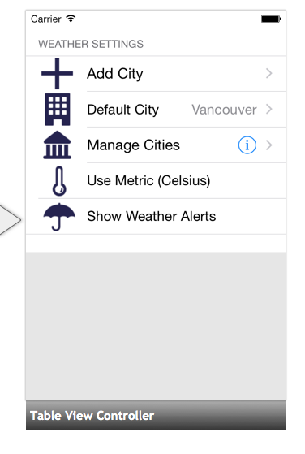
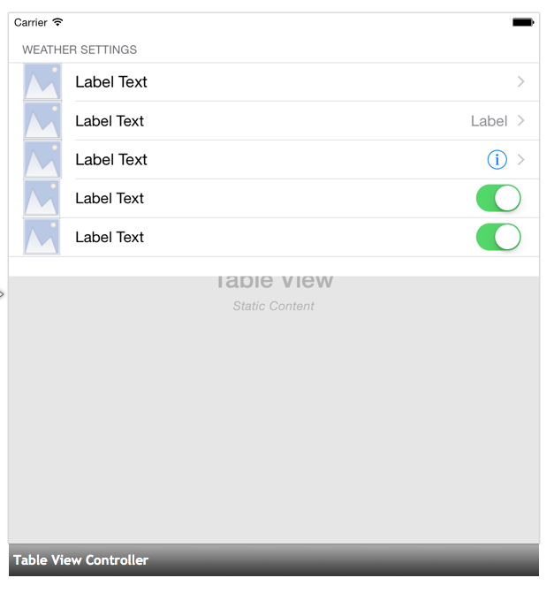

Duration
15 minutes
Goals
The primary goal of this lab will be to create a settings page for our weather app by designing custom static cells with the Xamarin Storyboard Designer.

Required assets
The provided Part 03 Resources contains a begin project and a completed solution that you can use to check your work. Please make sure you have this folder before you begin.
Challenge
Here are the high-level steps you will need to perform. Use these to complete the exercise and refer to the more detailed step-by-step instructions to fill in any necessary details. In this exercise you will recreate the first five cells of the Settings App for the iPhone to get a feel for how you would create static cells in Storyboard Designer.
Our basic steps will be:
- Open the Begin solution provided in the Part 03 Resources folder.
- Working in the MainStoryboard.storyboard file, select the table view.
- Change the table view to display one section of static cells with a dark gray cell separator.
- Change the section header to read "Settings" and create 5 rows of cells.
- Add the missing cells to the UItableView from the Widget tab of the properties pane.
- For each cell add, style and position the following UIImageViews, UILabels and UIControllers from the toolbox to each of the cells:
- Replace the image and title placeholders with final content

Steps
Below are the step-by-step instructions to implement the exercise.
Inspect the starter solution
- Open the Begin solution provided in the Part 03 Resources folder.
- Open the MainStoryboard.storyboard file and select the table view (not the controller).
UITableViewscome with dynamic protype cells by default, to change this you need to select the table view and change the content type in the properties pane to display one section of static cells with a dark gray cell separator.
- Next, we will change some of the section properties. To do that we must first select the section on the storyboard and then change the properties of the table view section in the properties pane and change the header to "Settings" and number of rows to "5"
- For each cell we are going to add UILabels, UIImageViews and controls.
- The first three cells can be styled with the default cell styles.
- The bottom two cells are custom and we need to add the child UIViews to these cells:
- First, select the cell.
- Drag and position the UI element from the toolbox onto the cell.
- To layout the elements more precisely you can select the element and specify the x and y coordinates in the layout tab of the properties pane.
- An accessory is optional in a custom cell.
- We can add them by selecting the cell and then, in the widget tab of the properties pane, select the accessory you would like to use.
- Now that the UI elements are placed we will customize them by providing new images and custom titles.
- To change the image select the UIImageView and select the icon you want to use from the image dropdown in the properties pane
- To change the title and color of the UI label, select the label and change change them in the properties pane.
- Once all of your images and label titles are changed your UITableView should look something like this:
- In order to interact with our cells in the code behind we need to set unique identifiers for each cell. For the custom cells we also name the child controls.
Summary
In the exercise you designed a table view with custom static cells in the Xamarin iOS Designer.